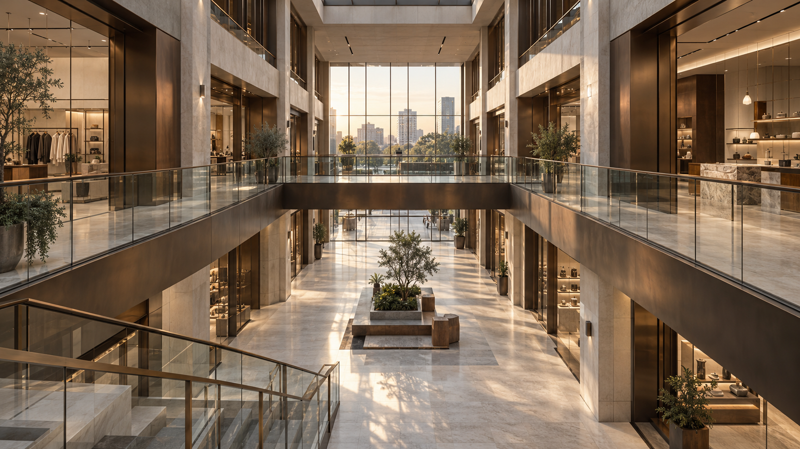

Plans & layouts
I organize rooms, circulation, access, and dimensions so the drawing is easy to read from the first glance.
I specialize in architectural drafting and detailing, turning early ideas into clear plans, elevations, and coordinated drawing sets.

Every space begins with careful thinking on paper. Lines, dimensions, and conversations bring an idea into focus before it becomes a building.
Architecture, drawing studies, and spaces that make me look twice. Explore the ideas, details, and visual thinking behind each project.
 Residential / 01
Residential / 01Elevation + render comparison
 Residential / 02
Residential / 02Plan and spatial organization
 Residential / 03
Residential / 03Ground plan + exterior concept
 Technical / 04
Technical / 04Exploded axonometric study
 Interiors / 05
Interiors / 05Section + interior visualization
 Technical / 06
Technical / 06Facade elevation study

Commercial / 07Plan + commercial visualization
The practical work that takes an architectural idea from a loose sketch to a readable set of decisions.
I organize rooms, circulation, access, and dimensions so the drawing is easy to read from the first glance.
I use vertical views to make levels, proportions, openings, and the relationship between spaces clear.
I focus on junctions, repeated elements, and information that helps the next person understand the intent.
I check how plans, structure, services, and revisions relate before a sheet is ready to share.
From drawing fundamentals to coordinated sets, each stage has shaped how I approach architectural work.
Residential & mixed-use documentation
Interiors & retail documentation
Plans, sections & elevations
From precise 2D drafting to model studies and final review, these tools support the way I work.
2D drafting and sheet organization
BIM and model coordination
Form and massing studies
Atmosphere and walkthroughs
Boards and visual polish
Markups and drawing review
I move through a project in clear stages, asking the right questions early and checking the details before they become problems later.
I'm Ashish, an AutoCAD designer who likes the moment a rough idea becomes a drawing someone can actually understand and use.
For me, a good drawing is calm and considered: the grid makes sense, the layers are clear, and every detail has a reason to be there.
The skills, training, and interests that inform how I think through each project.
Drafting plans and details, organizing sheets, reviewing markups, and coordinating revisions.
Residential, commercial, interiors, and presentation studies.
A foundation in spatial planning, technical communication, and architectural documentation.
Ongoing development in drawing systems, digital workflows, and design technology.
Drawing systems, thoughtful detailing, model-to-sheet coordination, and visual storytelling.
Good information should be easy to find, understand, and trust.
Small decisions shape how well a design holds together.
Review and feedback are part of making a drawing stronger.
Open to architectural drafting, detailing, and visualization collaborations. Have a project in mind? Let's start a conversation.
Download CV